# Load required packages
library(ggplot2)
library(dplyr)
library(skimr)
library(knitr)
library(here)Project 1: Penguin Data Cleaning and Analysis
Setup
This needs to run to load the R script so we can include the code chunks below. Note that you can pull in more than one R script if you want.
Welcome!
Hello and welcome to my Palmer Penguin Data Analysis project from Dr. Marguerite Butler for the ZOOL710 class here at the University of Hawai’i at Manoa.
In Project 1, the main focus is to:
1) Clean the palmer penguins data set
2) Analyze it further
3) Make it reproducible for others to use.In this document I walk you through how i corrected the errors in the data set as well as all my commands with comments.
Let’s walk through project 1 together!
Load Required Packages
Load Data
After you copy the repository and get in on your computer, Navigate to the Processing Code folder.
Now let’s Load it up!
data_location <- here("Data", "Raw_data", "penguins_raw_dirty.csv")
rawdata <- read.csv(data_location, check.names = FALSE)
dictionary_path <- here("Data", "Raw_data", "datadictionary.csv")Explore Data
Now we can explore the data and first get a glimpse of what it looks like. We can do this by using the glimpse, summary, and skimr functions. Look through the data and see of there are any errors or anything unusual we may need to fix.
dplyr::glimpse(rawdata)Rows: 344
Columns: 17
$ studyName <chr> "PAL0708", "PAL0708", "PAL0708", "PAL0708", "PAL…
$ `Sample Number` <int> 1, 2, 3, 4, 5, 6, 7, 8, 9, 10, 11, 12, 13, 14, 1…
$ Species <chr> "Adelie Penguin (Pygoscelis adeliae)", "Adelie P…
$ Region <chr> "Anvers", "Anvers", "Anvers", "Anvers", "Anvers"…
$ Island <chr> "Torgersen", "Torgersen", "Torgersen", "Torgerse…
$ Stage <chr> "Adult, 1 Egg Stage", "Adult, 1 Egg Stage", "Adu…
$ `Individual ID` <chr> "N1A1", "N1A2", "N2A1", "N2A2", "N3A1", "N3A2", …
$ `Clutch Completion` <chr> "Yes", "Yes", "Yes", "Yes", "Yes", "Yes", "No", …
$ `Date Egg` <chr> "2007-11-11", "2007-11-11", "2007-11-16", "2007-…
$ `Culmen Length (mm)` <chr> "39.1", "39.5", "40.3", "missing", "36.7", "39.3…
$ `Culmen Depth (mm)` <dbl> 18.7, 17.4, 18.0, NA, 19.3, 20.6, 17.8, 19.6, 18…
$ `Flipper Length (mm)` <int> 181, 186, 195, NA, 193, 190, 181, 195, 193, 190,…
$ `Body Mass (g)` <int> 3750, 3800, 3250, NA, 3450, 3650, 3625, 4675, 34…
$ Sex <chr> "MALE", "FEMALE", "FEMALE", NA, "FEMALE", "MALE"…
$ `Delta 15 N (o/oo)` <dbl> NA, 8.94956, 8.36821, NA, 8.76651, 8.66496, 9.18…
$ `Delta 13 C (o/oo)` <dbl> NA, -24.69454, -25.33302, NA, -25.32426, -25.298…
$ Comments <chr> "Not enough blood for isotopes.", NA, NA, "Adult…summary(rawdata) studyName Sample Number Species Region
Length:344 Min. : 1.00 Length:344 Length:344
Class :character 1st Qu.: 29.00 Class :character Class :character
Mode :character Median : 58.00 Mode :character Mode :character
Mean : 63.15
3rd Qu.: 95.25
Max. :152.00
Island Stage Individual ID Clutch Completion
Length:344 Length:344 Length:344 Length:344
Class :character Class :character Class :character Class :character
Mode :character Mode :character Mode :character Mode :character
Date Egg Culmen Length (mm) Culmen Depth (mm) Flipper Length (mm)
Length:344 Length:344 Min. :13.10 Min. :172.0
Class :character Class :character 1st Qu.:15.60 1st Qu.:190.0
Mode :character Mode :character Median :17.30 Median :197.0
Mean :17.15 Mean :200.9
3rd Qu.:18.70 3rd Qu.:213.0
Max. :21.50 Max. :231.0
NA's :2 NA's :2
Body Mass (g) Sex Delta 15 N (o/oo) Delta 13 C (o/oo)
Min. : 47 Length:344 Min. : 7.632 Min. :-27.02
1st Qu.:3550 Class :character 1st Qu.: 8.300 1st Qu.:-26.32
Median :4000 Mode :character Median : 8.652 Median :-25.83
Mean :4160 Mean : 8.733 Mean :-25.69
3rd Qu.:4750 3rd Qu.: 9.172 3rd Qu.:-25.06
Max. :6300 Max. :10.025 Max. :-23.79
NA's :2 NA's :14 NA's :13
Comments
Length:344
Class :character
Mode :character
skimr::skim(rawdata)| Name | rawdata |
| Number of rows | 344 |
| Number of columns | 17 |
| _______________________ | |
| Column type frequency: | |
| character | 11 |
| numeric | 6 |
| ________________________ | |
| Group variables | None |
Variable type: character
| skim_variable | n_missing | complete_rate | min | max | empty | n_unique | whitespace |
|---|---|---|---|---|---|---|---|
| studyName | 0 | 1.00 | 7 | 7 | 0 | 3 | 0 |
| Species | 0 | 1.00 | 33 | 41 | 0 | 9 | 0 |
| Region | 0 | 1.00 | 6 | 6 | 0 | 1 | 0 |
| Island | 0 | 1.00 | 5 | 9 | 0 | 3 | 0 |
| Stage | 0 | 1.00 | 18 | 18 | 0 | 1 | 0 |
| Individual ID | 0 | 1.00 | 4 | 6 | 0 | 190 | 0 |
| Clutch Completion | 0 | 1.00 | 2 | 3 | 0 | 2 | 0 |
| Date Egg | 0 | 1.00 | 10 | 10 | 0 | 50 | 0 |
| Culmen Length (mm) | 1 | 1.00 | 2 | 7 | 0 | 168 | 0 |
| Sex | 11 | 0.97 | 4 | 6 | 0 | 2 | 0 |
| Comments | 290 | 0.16 | 18 | 68 | 0 | 10 | 0 |
Variable type: numeric
| skim_variable | n_missing | complete_rate | mean | sd | p0 | p25 | p50 | p75 | p100 | hist |
|---|---|---|---|---|---|---|---|---|---|---|
| Sample Number | 0 | 1.00 | 63.15 | 40.43 | 1.00 | 29.00 | 58.00 | 95.25 | 152.00 | ▇▇▆▅▃ |
| Culmen Depth (mm) | 2 | 0.99 | 17.15 | 1.97 | 13.10 | 15.60 | 17.30 | 18.70 | 21.50 | ▅▅▇▇▂ |
| Flipper Length (mm) | 2 | 0.99 | 200.92 | 14.06 | 172.00 | 190.00 | 197.00 | 213.00 | 231.00 | ▂▇▃▅▂ |
| Body Mass (g) | 2 | 0.99 | 4159.78 | 888.53 | 47.00 | 3550.00 | 4000.00 | 4750.00 | 6300.00 | ▁▁▇▇▃ |
| Delta 15 N (o/oo) | 14 | 0.96 | 8.73 | 0.55 | 7.63 | 8.30 | 8.65 | 9.17 | 10.03 | ▃▇▆▅▂ |
| Delta 13 C (o/oo) | 13 | 0.96 | -25.69 | 0.79 | -27.02 | -26.32 | -25.83 | -25.06 | -23.79 | ▆▇▅▅▂ |
Error 1: Fix Species Typos
This dataset should only have 3 species, but we actually have 9. Let’s look at the different species using the “unique” command.
# Check for species name inconsistencies
unique(rawdata$Species)[1] "Adelie Penguin (Pygoscelis adeliae)"
[2] "Adelie PengTin (Pygoscelis adeliae)"
[3] "Adelie Pengufn (Pygoscelis adeliae)"
[4] "Adelie PeOguin (Pygoscelis adeliae)"
[5] "AdeKie Penguin (Pygoscelis adeliae)"
[6] "AdelieMPenguin (Pygoscelis adeliae)"
[7] "Gentoo penguin (Pygoscelis papua)"
[8] "Ventoo penguin (Pygoscelis papua)"
[9] "Chinstrap penguin (Pygoscelis antarctica)"Here we can easily see all the typos, lets fix them.
First we’ll make a working copy of the raw data so we can compare our modified version to the original later on.
d1 <- rawdataNow we can fix the species names.
d1$Species <- sub("gTin", "guin", d1$Species)
d1$Species <- sub("gufn", "guin", d1$Species)
d1$Species <- sub("PeOguin", "Penguin", d1$Species) # Fix corrected here!
d1$Species <- sub("Peguin", "Penguin", d1$Species)
d1$Species <- sub("AdeKie", "Adelie", d1$Species)
d1$Species <- sub("AdelieMPenguin", "Adelie Penguin", d1$Species)
d1$Species <- sub("Ventoo", "Gentoo", d1$Species)
# We can also remove the word "penguin" from the species so we jsut get the three:
# Adelie, Gentoo, & Chinstrap
d1$Species <- gsub(" [Pp]enguin \\(.*\\)", "", d1$Species)
# Now lets if our edits were correct and that we have only 3 species ---
unique(d1$Species)[1] "Adelie" "Gentoo" "Chinstrap"Looks Good!
Error 2: Missing Values
When you use the dplyr::glimpse(rawdata) command, we notice there is a missing value for Culmen length. We need to fix this by converting “missing” values to NA and ensure numeric type for Culmen Length.
c1 <- d1$`Culmen Length (mm)`
c1[c1 == "missing"] <- NA
c1 <- as.numeric(c1)
d1$`Culmen Length (mm)` <- c1
# Check to make sure we only have numeric values using skimr command
skimr::skim(d1)| Name | d1 |
| Number of rows | 344 |
| Number of columns | 17 |
| _______________________ | |
| Column type frequency: | |
| character | 10 |
| numeric | 7 |
| ________________________ | |
| Group variables | None |
Variable type: character
| skim_variable | n_missing | complete_rate | min | max | empty | n_unique | whitespace |
|---|---|---|---|---|---|---|---|
| studyName | 0 | 1.00 | 7 | 7 | 0 | 3 | 0 |
| Species | 0 | 1.00 | 6 | 9 | 0 | 3 | 0 |
| Region | 0 | 1.00 | 6 | 6 | 0 | 1 | 0 |
| Island | 0 | 1.00 | 5 | 9 | 0 | 3 | 0 |
| Stage | 0 | 1.00 | 18 | 18 | 0 | 1 | 0 |
| Individual ID | 0 | 1.00 | 4 | 6 | 0 | 190 | 0 |
| Clutch Completion | 0 | 1.00 | 2 | 3 | 0 | 2 | 0 |
| Date Egg | 0 | 1.00 | 10 | 10 | 0 | 50 | 0 |
| Sex | 11 | 0.97 | 4 | 6 | 0 | 2 | 0 |
| Comments | 290 | 0.16 | 18 | 68 | 0 | 10 | 0 |
Variable type: numeric
| skim_variable | n_missing | complete_rate | mean | sd | p0 | p25 | p50 | p75 | p100 | hist |
|---|---|---|---|---|---|---|---|---|---|---|
| Sample Number | 0 | 1.00 | 63.15 | 40.43 | 1.00 | 29.00 | 58.00 | 95.25 | 152.00 | ▇▇▆▅▃ |
| Culmen Length (mm) | 2 | 0.99 | 47.60 | 39.89 | 32.10 | 39.23 | 44.50 | 48.58 | 511.00 | ▇▁▁▁▁ |
| Culmen Depth (mm) | 2 | 0.99 | 17.15 | 1.97 | 13.10 | 15.60 | 17.30 | 18.70 | 21.50 | ▅▅▇▇▂ |
| Flipper Length (mm) | 2 | 0.99 | 200.92 | 14.06 | 172.00 | 190.00 | 197.00 | 213.00 | 231.00 | ▂▇▃▅▂ |
| Body Mass (g) | 2 | 0.99 | 4159.78 | 888.53 | 47.00 | 3550.00 | 4000.00 | 4750.00 | 6300.00 | ▁▁▇▇▃ |
| Delta 15 N (o/oo) | 14 | 0.96 | 8.73 | 0.55 | 7.63 | 8.30 | 8.65 | 9.17 | 10.03 | ▃▇▆▅▂ |
| Delta 13 C (o/oo) | 13 | 0.96 | -25.69 | 0.79 | -27.02 | -26.32 | -25.83 | -25.06 | -23.79 | ▆▇▅▅▂ |
Looks Good!
Error 3: Irregular Data Points
We can use plots to look at the distribution of the data just to get a visual and see of anything looks off. We can plot a histogram of culmen length and frequency, and a plot of body mass and culmen length.
hist(d1$`Culmen Length (mm)`)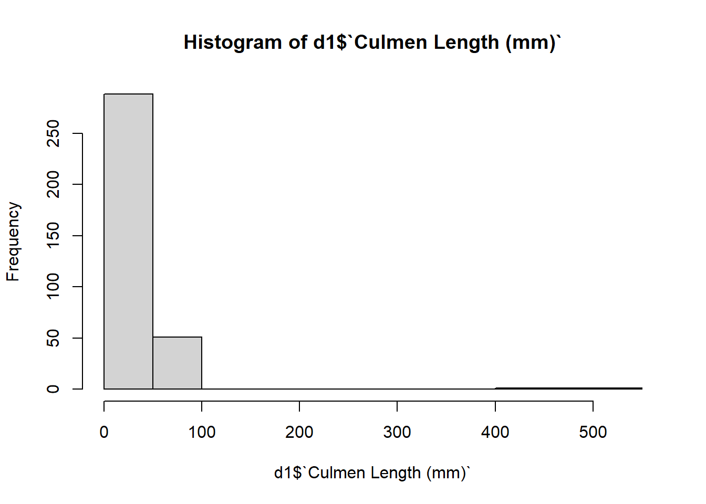
plot(d1$`Body Mass (g)`, d1$`Culmen Length (mm)`)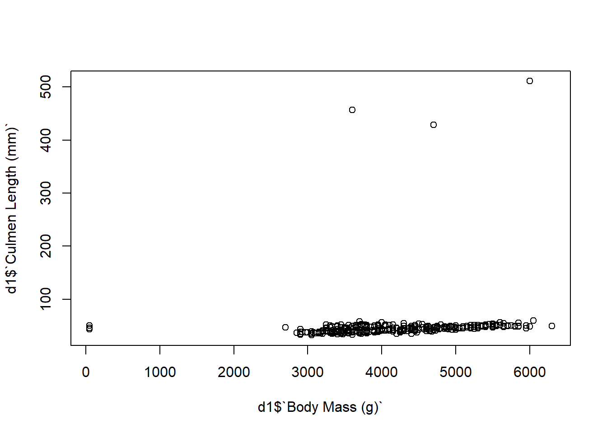
Fix the Outliers
In the histogram, 3 penguins have extremely long culmen lengths (300+mm) which is most likely a typo that we need to remove.
d2 <- d1
c1[!is.na(c1) & c1 > 300] <- c1[!is.na(c1) & c1 > 300] / 10
d2$`Culmen Length (mm)` <- c1
# Check again
skimr::skim(d2)| Name | d2 |
| Number of rows | 344 |
| Number of columns | 17 |
| _______________________ | |
| Column type frequency: | |
| character | 10 |
| numeric | 7 |
| ________________________ | |
| Group variables | None |
Variable type: character
| skim_variable | n_missing | complete_rate | min | max | empty | n_unique | whitespace |
|---|---|---|---|---|---|---|---|
| studyName | 0 | 1.00 | 7 | 7 | 0 | 3 | 0 |
| Species | 0 | 1.00 | 6 | 9 | 0 | 3 | 0 |
| Region | 0 | 1.00 | 6 | 6 | 0 | 1 | 0 |
| Island | 0 | 1.00 | 5 | 9 | 0 | 3 | 0 |
| Stage | 0 | 1.00 | 18 | 18 | 0 | 1 | 0 |
| Individual ID | 0 | 1.00 | 4 | 6 | 0 | 190 | 0 |
| Clutch Completion | 0 | 1.00 | 2 | 3 | 0 | 2 | 0 |
| Date Egg | 0 | 1.00 | 10 | 10 | 0 | 50 | 0 |
| Sex | 11 | 0.97 | 4 | 6 | 0 | 2 | 0 |
| Comments | 290 | 0.16 | 18 | 68 | 0 | 10 | 0 |
Variable type: numeric
| skim_variable | n_missing | complete_rate | mean | sd | p0 | p25 | p50 | p75 | p100 | hist |
|---|---|---|---|---|---|---|---|---|---|---|
| Sample Number | 0 | 1.00 | 63.15 | 40.43 | 1.00 | 29.00 | 58.00 | 95.25 | 152.00 | ▇▇▆▅▃ |
| Culmen Length (mm) | 2 | 0.99 | 43.92 | 5.46 | 32.10 | 39.23 | 44.45 | 48.50 | 59.60 | ▃▇▇▆▁ |
| Culmen Depth (mm) | 2 | 0.99 | 17.15 | 1.97 | 13.10 | 15.60 | 17.30 | 18.70 | 21.50 | ▅▅▇▇▂ |
| Flipper Length (mm) | 2 | 0.99 | 200.92 | 14.06 | 172.00 | 190.00 | 197.00 | 213.00 | 231.00 | ▂▇▃▅▂ |
| Body Mass (g) | 2 | 0.99 | 4159.78 | 888.53 | 47.00 | 3550.00 | 4000.00 | 4750.00 | 6300.00 | ▁▁▇▇▃ |
| Delta 15 N (o/oo) | 14 | 0.96 | 8.73 | 0.55 | 7.63 | 8.30 | 8.65 | 9.17 | 10.03 | ▃▇▆▅▂ |
| Delta 13 C (o/oo) | 13 | 0.96 | -25.69 | 0.79 | -27.02 | -26.32 | -25.83 | -25.06 | -23.79 | ▆▇▅▅▂ |
hist(d2$`Culmen Length (mm)`)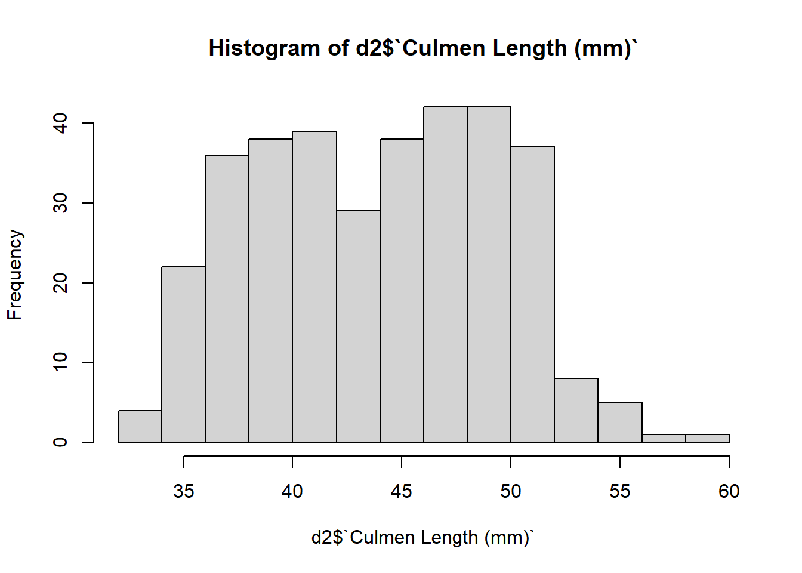
plot(d1$`Body Mass (g)`, d1$`Culmen Length (mm)`)Looks Good!
Error 4: Remove Incorrect Body Mass Values
In the Bivariate plot, we can see some extremely light penguins. These are most likely babies and aren’t relevant to the data set.
The data focuses on adults. Let’s go ahead and remove them.
d3 <- d2
mm <- d3$`Body Mass (g)`
mm[mm < 100] <- NA
nas <- which(is.na(mm))
d3 <- d3[-nas, ]
# Verify fix
skimr::skim(d3)| Name | d3 |
| Number of rows | 339 |
| Number of columns | 17 |
| _______________________ | |
| Column type frequency: | |
| character | 10 |
| numeric | 7 |
| ________________________ | |
| Group variables | None |
Variable type: character
| skim_variable | n_missing | complete_rate | min | max | empty | n_unique | whitespace |
|---|---|---|---|---|---|---|---|
| studyName | 0 | 1.00 | 7 | 7 | 0 | 3 | 0 |
| Species | 0 | 1.00 | 6 | 9 | 0 | 3 | 0 |
| Region | 0 | 1.00 | 6 | 6 | 0 | 1 | 0 |
| Island | 0 | 1.00 | 5 | 9 | 0 | 3 | 0 |
| Stage | 0 | 1.00 | 18 | 18 | 0 | 1 | 0 |
| Individual ID | 0 | 1.00 | 4 | 6 | 0 | 190 | 0 |
| Clutch Completion | 0 | 1.00 | 2 | 3 | 0 | 2 | 0 |
| Date Egg | 0 | 1.00 | 10 | 10 | 0 | 50 | 0 |
| Sex | 9 | 0.97 | 4 | 6 | 0 | 2 | 0 |
| Comments | 287 | 0.15 | 25 | 68 | 0 | 8 | 0 |
Variable type: numeric
| skim_variable | n_missing | complete_rate | mean | sd | p0 | p25 | p50 | p75 | p100 | hist |
|---|---|---|---|---|---|---|---|---|---|---|
| Sample Number | 0 | 1.00 | 63.13 | 40.33 | 1.00 | 29.50 | 58.00 | 95.00 | 152.00 | ▇▇▆▅▃ |
| Culmen Length (mm) | 0 | 1.00 | 43.90 | 5.47 | 32.10 | 39.20 | 44.40 | 48.50 | 59.60 | ▅▇▇▆▁ |
| Culmen Depth (mm) | 0 | 1.00 | 17.17 | 1.97 | 13.10 | 15.65 | 17.30 | 18.70 | 21.50 | ▅▅▇▇▂ |
| Flipper Length (mm) | 0 | 1.00 | 200.79 | 14.05 | 172.00 | 190.00 | 197.00 | 213.00 | 231.00 | ▂▇▃▅▂ |
| Body Mass (g) | 0 | 1.00 | 4196.17 | 803.20 | 2700.00 | 3550.00 | 4000.00 | 4750.00 | 6300.00 | ▃▇▅▃▂ |
| Delta 15 N (o/oo) | 12 | 0.96 | 8.74 | 0.55 | 7.63 | 8.30 | 8.66 | 9.18 | 10.03 | ▃▇▆▅▂ |
| Delta 13 C (o/oo) | 11 | 0.97 | -25.68 | 0.79 | -27.02 | -26.32 | -25.83 | -25.06 | -23.79 | ▆▇▅▅▂ |
plot(d3$`Body Mass (g)`, d3$`Culmen Length (mm)`)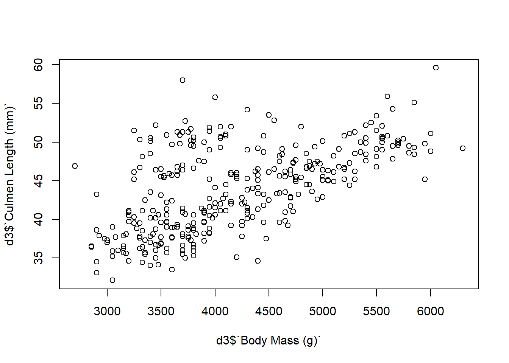
Looks Good!
Error 5: Missing Masses
Mass is the main size variable, so we need to remove individuals with misssing masses in order to analyze the data.
d3$Species <- as.factor(d3$Species)
d3$Sex <- as.factor(d3$Sex)
d3$Island <- as.factor(d3$Island)
# Final check
skimr::skim(d3)| Name | d3 |
| Number of rows | 339 |
| Number of columns | 17 |
| _______________________ | |
| Column type frequency: | |
| character | 7 |
| factor | 3 |
| numeric | 7 |
| ________________________ | |
| Group variables | None |
Variable type: character
| skim_variable | n_missing | complete_rate | min | max | empty | n_unique | whitespace |
|---|---|---|---|---|---|---|---|
| studyName | 0 | 1.00 | 7 | 7 | 0 | 3 | 0 |
| Region | 0 | 1.00 | 6 | 6 | 0 | 1 | 0 |
| Stage | 0 | 1.00 | 18 | 18 | 0 | 1 | 0 |
| Individual ID | 0 | 1.00 | 4 | 6 | 0 | 190 | 0 |
| Clutch Completion | 0 | 1.00 | 2 | 3 | 0 | 2 | 0 |
| Date Egg | 0 | 1.00 | 10 | 10 | 0 | 50 | 0 |
| Comments | 287 | 0.15 | 25 | 68 | 0 | 8 | 0 |
Variable type: factor
| skim_variable | n_missing | complete_rate | ordered | n_unique | top_counts |
|---|---|---|---|---|---|
| Species | 0 | 1.00 | FALSE | 3 | Ade: 151, Gen: 120, Chi: 68 |
| Island | 0 | 1.00 | FALSE | 3 | Bis: 164, Dre: 124, Tor: 51 |
| Sex | 9 | 0.97 | FALSE | 2 | MAL: 168, FEM: 162 |
Variable type: numeric
| skim_variable | n_missing | complete_rate | mean | sd | p0 | p25 | p50 | p75 | p100 | hist |
|---|---|---|---|---|---|---|---|---|---|---|
| Sample Number | 0 | 1.00 | 63.13 | 40.33 | 1.00 | 29.50 | 58.00 | 95.00 | 152.00 | ▇▇▆▅▃ |
| Culmen Length (mm) | 0 | 1.00 | 43.90 | 5.47 | 32.10 | 39.20 | 44.40 | 48.50 | 59.60 | ▅▇▇▆▁ |
| Culmen Depth (mm) | 0 | 1.00 | 17.17 | 1.97 | 13.10 | 15.65 | 17.30 | 18.70 | 21.50 | ▅▅▇▇▂ |
| Flipper Length (mm) | 0 | 1.00 | 200.79 | 14.05 | 172.00 | 190.00 | 197.00 | 213.00 | 231.00 | ▂▇▃▅▂ |
| Body Mass (g) | 0 | 1.00 | 4196.17 | 803.20 | 2700.00 | 3550.00 | 4000.00 | 4750.00 | 6300.00 | ▃▇▅▃▂ |
| Delta 15 N (o/oo) | 12 | 0.96 | 8.74 | 0.55 | 7.63 | 8.30 | 8.66 | 9.18 | 10.03 | ▃▇▆▅▂ |
| Delta 13 C (o/oo) | 11 | 0.97 | -25.68 | 0.79 | -27.02 | -26.32 | -25.83 | -25.06 | -23.79 | ▆▇▅▅▂ |
hist(d3$`Body Mass (g)`)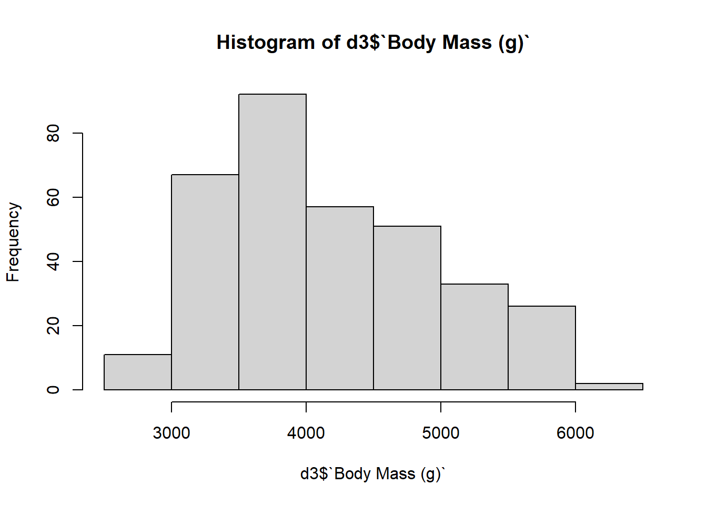
plot(d3$`Body Mass (g)`, d3$`Culmen Length (mm)`)Looks Good!
Have Species, Sex, and Island coded as categorical/factor variable
d3$Species <- as.factor(d3$Species)
d3$Sex <- as.factor(d3$Sex)
d3$Island <- as.factor(d3$Island)
skimr::skim(d3)| Name | d3 |
| Number of rows | 339 |
| Number of columns | 17 |
| _______________________ | |
| Column type frequency: | |
| character | 7 |
| factor | 3 |
| numeric | 7 |
| ________________________ | |
| Group variables | None |
Variable type: character
| skim_variable | n_missing | complete_rate | min | max | empty | n_unique | whitespace |
|---|---|---|---|---|---|---|---|
| studyName | 0 | 1.00 | 7 | 7 | 0 | 3 | 0 |
| Region | 0 | 1.00 | 6 | 6 | 0 | 1 | 0 |
| Stage | 0 | 1.00 | 18 | 18 | 0 | 1 | 0 |
| Individual ID | 0 | 1.00 | 4 | 6 | 0 | 190 | 0 |
| Clutch Completion | 0 | 1.00 | 2 | 3 | 0 | 2 | 0 |
| Date Egg | 0 | 1.00 | 10 | 10 | 0 | 50 | 0 |
| Comments | 287 | 0.15 | 25 | 68 | 0 | 8 | 0 |
Variable type: factor
| skim_variable | n_missing | complete_rate | ordered | n_unique | top_counts |
|---|---|---|---|---|---|
| Species | 0 | 1.00 | FALSE | 3 | Ade: 151, Gen: 120, Chi: 68 |
| Island | 0 | 1.00 | FALSE | 3 | Bis: 164, Dre: 124, Tor: 51 |
| Sex | 9 | 0.97 | FALSE | 2 | MAL: 168, FEM: 162 |
Variable type: numeric
| skim_variable | n_missing | complete_rate | mean | sd | p0 | p25 | p50 | p75 | p100 | hist |
|---|---|---|---|---|---|---|---|---|---|---|
| Sample Number | 0 | 1.00 | 63.13 | 40.33 | 1.00 | 29.50 | 58.00 | 95.00 | 152.00 | ▇▇▆▅▃ |
| Culmen Length (mm) | 0 | 1.00 | 43.90 | 5.47 | 32.10 | 39.20 | 44.40 | 48.50 | 59.60 | ▅▇▇▆▁ |
| Culmen Depth (mm) | 0 | 1.00 | 17.17 | 1.97 | 13.10 | 15.65 | 17.30 | 18.70 | 21.50 | ▅▅▇▇▂ |
| Flipper Length (mm) | 0 | 1.00 | 200.79 | 14.05 | 172.00 | 190.00 | 197.00 | 213.00 | 231.00 | ▂▇▃▅▂ |
| Body Mass (g) | 0 | 1.00 | 4196.17 | 803.20 | 2700.00 | 3550.00 | 4000.00 | 4750.00 | 6300.00 | ▃▇▅▃▂ |
| Delta 15 N (o/oo) | 12 | 0.96 | 8.74 | 0.55 | 7.63 | 8.30 | 8.66 | 9.18 | 10.03 | ▃▇▆▅▂ |
| Delta 13 C (o/oo) | 11 | 0.97 | -25.68 | 0.79 | -27.02 | -26.32 | -25.83 | -25.06 | -23.79 | ▆▇▅▅▂ |
Looks Good!
Extra Analysis: Make Bivariate Plots
We can make some bivariate plots for any remaining continuous data to ensure there are no further errors. We can make many different plots and just have fun exploring the visual representations of the relationships between different variables.
Scatter plot 1: Body Mass vs. Culmen Depth
This plot looks at if the heavier penguins tend to have deeper culmens (beaks).
A positive relationship could mean that larger penguins have proportionally larger beak depths.
plot(d3$`Body Mass (g)`, d3$`Culmen Depth (mm)`,
main="Body Mass vs. Culmen Depth",
xlab="Body Mass (g)", ylab="Culmen Depth (mm)",
pch=19, col="steelblue")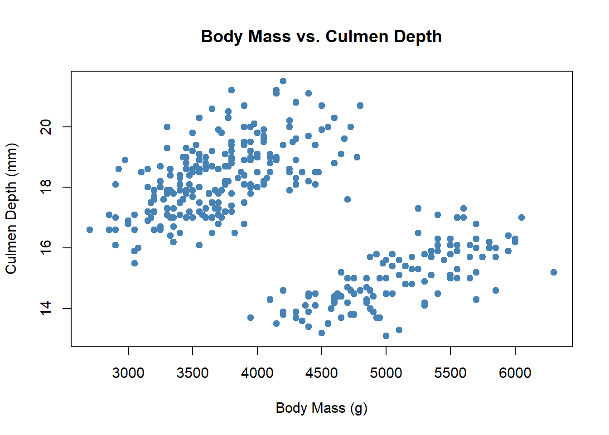
Scatter plot 2: Culmen Length vs. Culmen Depth
This graph explores the relationship between beak length and beak depth.
This could reveal adaptations to diet or feeding methods.
plot(d3$`Culmen Length (mm)`, d3$`Culmen Depth (mm)`,
main="Culmen Length vs. Culmen Depth",
xlab="Culmen Length (mm)", ylab="Culmen Depth (mm)",
pch=19, col="forestgreen")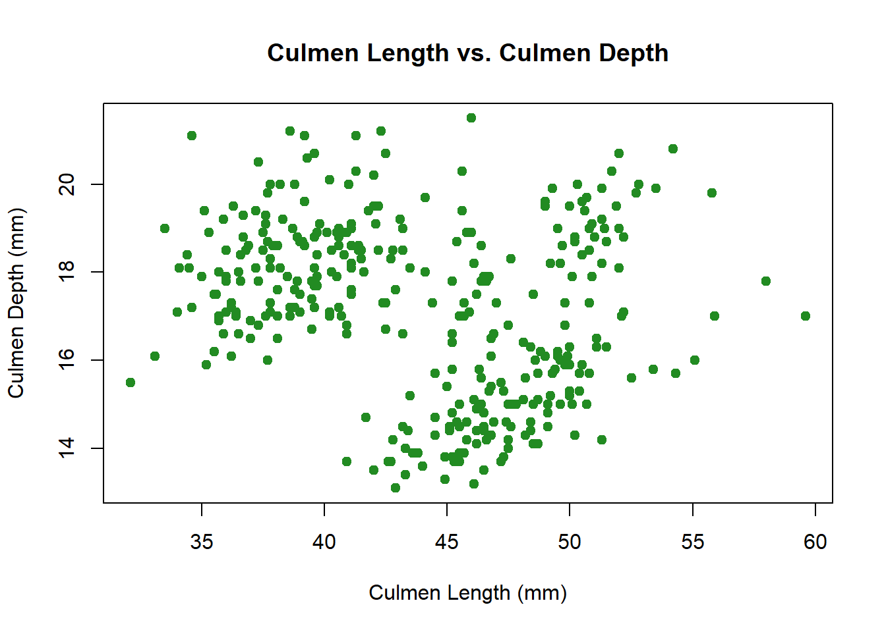
Scatter plot 3: Flipper Length vs. Body Mass
This plot looks at of penguins with longer flippers tend to have greater body mass.
Penguins with longer flipers may correlate to better swimming efficieny and reflect overall body condition.
plot(d3$`Flipper Length (mm)`, d3$`Body Mass (g)`,
main="Flipper Length vs. Body Mass",
xlab="Flipper Length (mm)", ylab="Body Mass (g)",
pch=19, col="darkorange")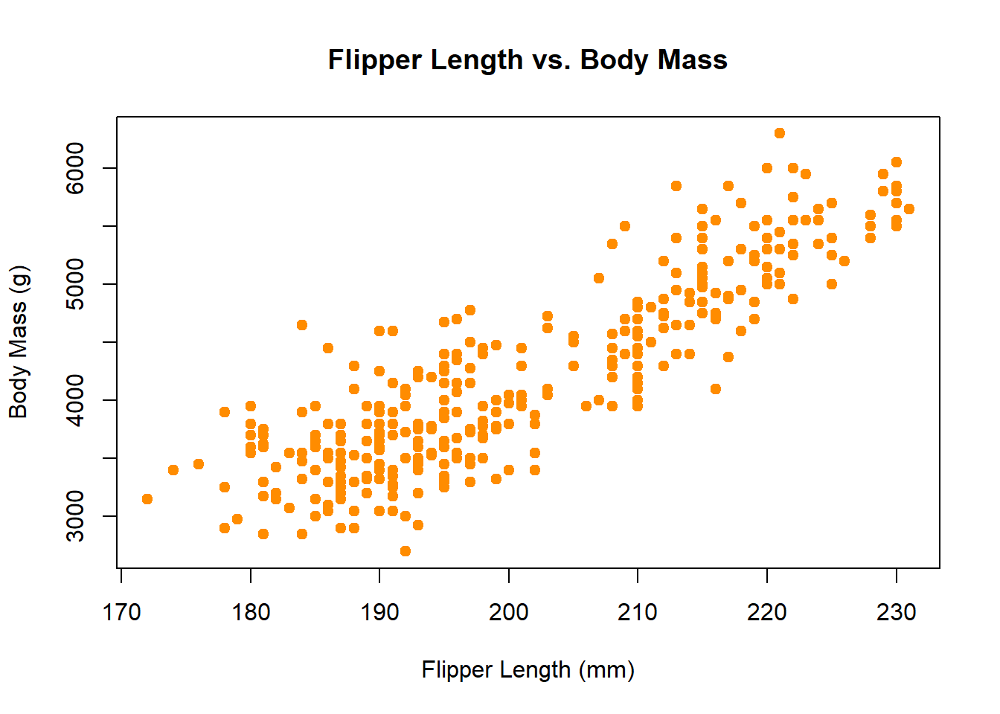
Boxplot 1: Body Mass by Species
This box plot compares the body mass distribution across the three penguin species.
boxplot(d3$`Body Mass (g)` ~ d3$Species,
main="Body Mass by Species",
xlab="Species", ylab="Body Mass (g)",
col=c("skyblue","lightgreen","lightpink"))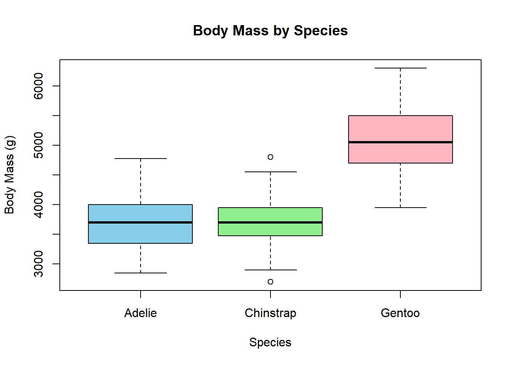
Boxplot 2: Culmen Length by Island
This boxplot looks at the difference in beak length among penguins from different islands.
Variations might reveal island specific ecological or genetic influences on penguin morphology
boxplot(d3$`Culmen Length (mm)` ~ d3$Island,
main="Culmen Length by Island",
xlab="Island", ylab="Culmen Length (mm)",
col=c("cornflowerblue","aquamarine","gold"))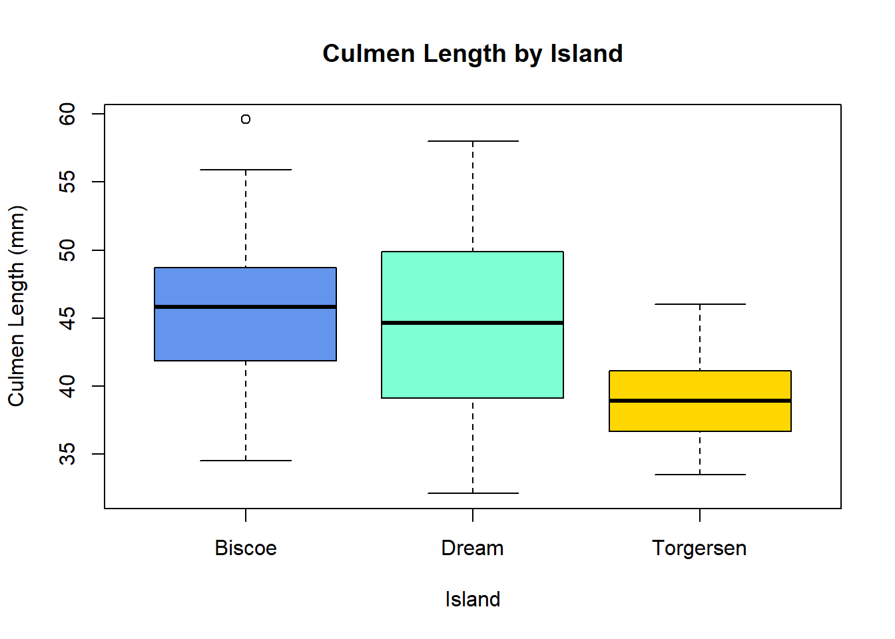
Density plot 1: Body Mass by Species
This plot looks at the body mass distribution for each penguin species.
library(ggplot2)
ggplot(d3, aes(x=`Body Mass (g)`, fill=Species)) +
geom_density(alpha=0.5) +
labs(title="Density of Body Mass by Species")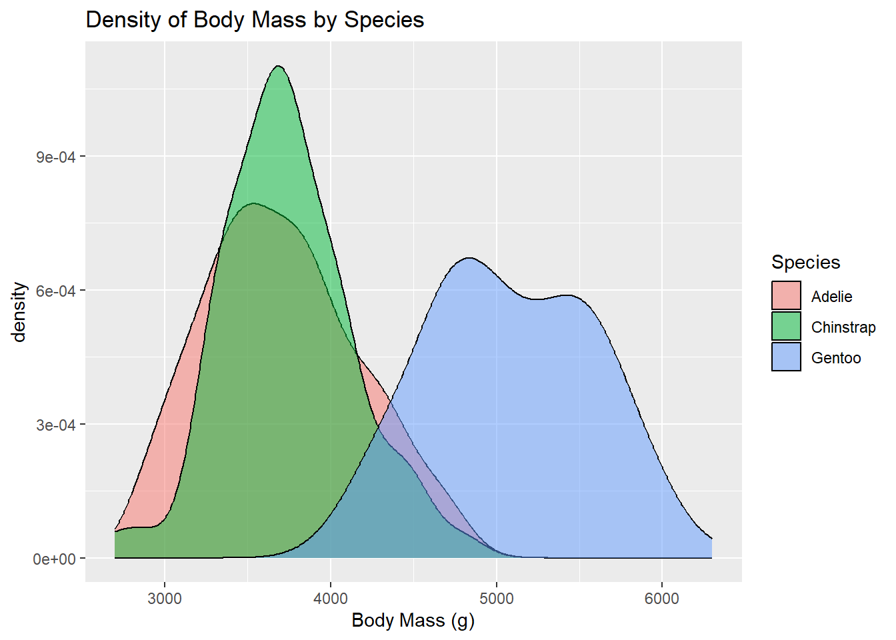
Density plot 2: Flipper Length by Sex
This plot looks at the differences in flipper length between males and females and if there are any major differences.
ggplot(d3, aes(x=`Flipper Length (mm)`, fill=Sex)) +
geom_density(alpha=0.5) +
labs(title="Density of Flipper Length by Sex")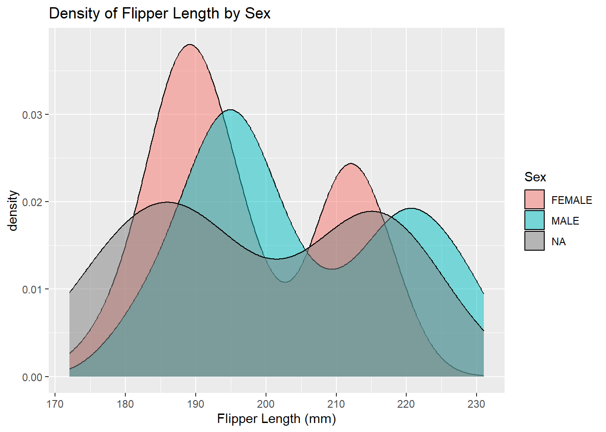
Histogram of Body Mass by Species
This histogram is just another way to show the distribution of body mass by species.
ggplot(d3, aes(x = `Body Mass (g)`, fill = Species)) +
geom_histogram(binwidth = 250, position = "dodge", alpha = 0.7) +
theme_minimal() +
labs(title = "Distribution of Body Mass by Species")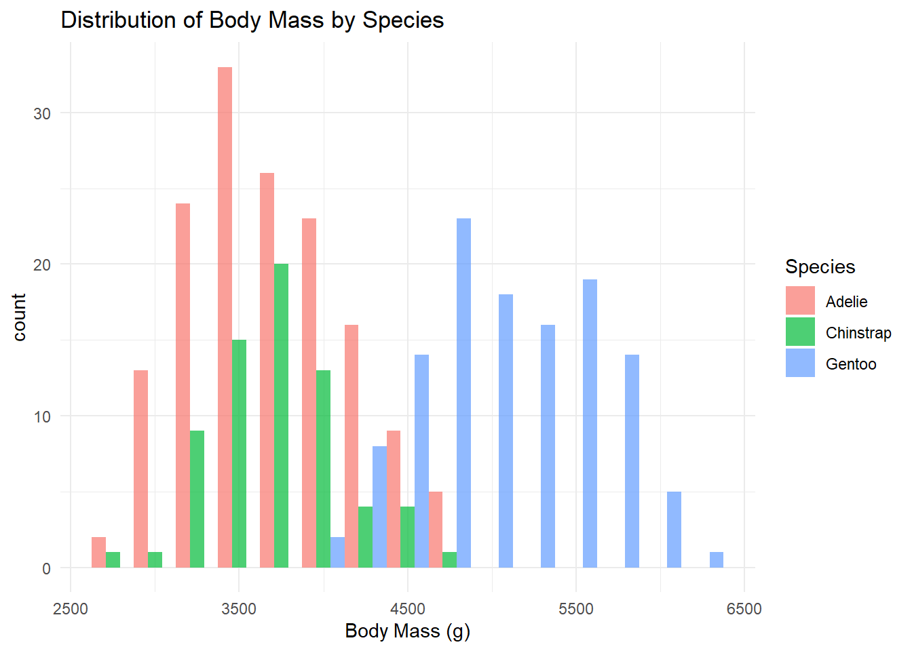
Bar plot: Penguin Count per Island
This bar plot summarizes the number of penguins sampled from each island.
This can help identify possible sampling biases ot differens in penguin population distribution across islands.
ggplot(d3, aes(x = Island, fill = Island)) +
geom_bar() +
theme_minimal() +
labs(title = "Penguin Count per Island")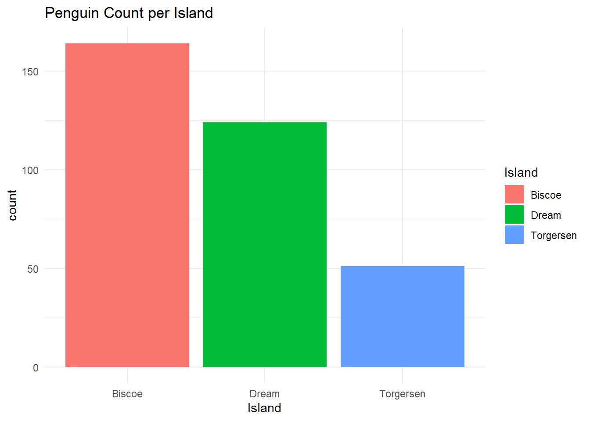
Violin plot: Flipper Length by Species
This plot shows how flipper length varies within and between species.
The width indicates the frequency of penguins at a given flipper length.
ggplot(d3, aes(x = Species, y = `Flipper Length (mm)`, fill = Species)) +
geom_violin(alpha = 0.7) +
theme_minimal() +
labs(title = "Flipper Length Distribution by Species")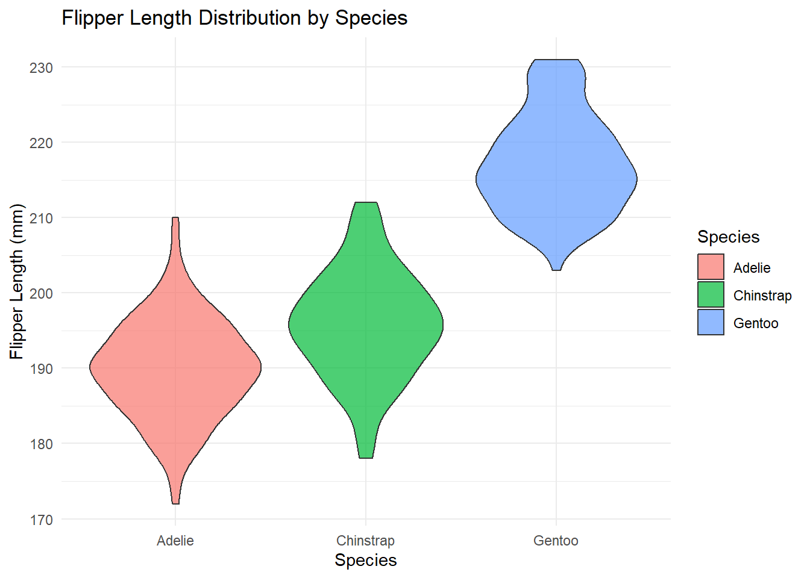
Faceted scatter plot
This plot breaks down the relationship between body mass and culmen length separately by species.
It shows if the relationship differs among species and helps identify species-specific patterns or outliers.
ggplot(d3, aes(x = `Body Mass (g)`, y = `Culmen Length (mm)`, color = Species)) +
geom_point(alpha = 0.7) +
facet_wrap(~ Species) +
theme_minimal() +
labs(title = "Body Mass vs. Culmen Length for Each Species")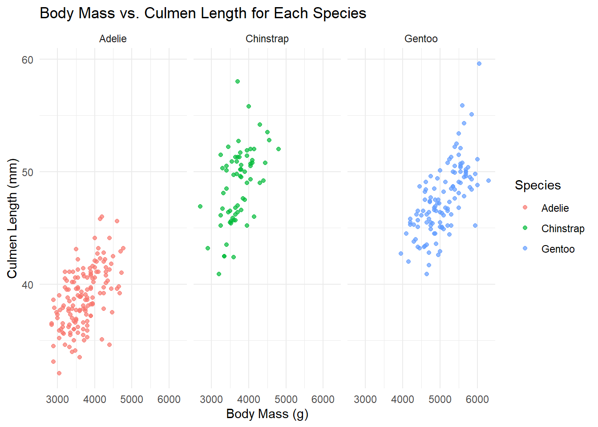
Finalize the Data
Final Clean
colnames(d3) [1] "studyName" "Sample Number" "Species"
[4] "Region" "Island" "Stage"
[7] "Individual ID" "Clutch Completion" "Date Egg"
[10] "Culmen Length (mm)" "Culmen Depth (mm)" "Flipper Length (mm)"
[13] "Body Mass (g)" "Sex" "Delta 15 N (o/oo)"
[16] "Delta 13 C (o/oo)" "Comments" library(dplyr)
# Remove the unnecessary columns
d_final <- d3 %>%
dplyr::select(-c("Comments",
"Delta 15 N (o/oo)",
"Delta 13 C (o/oo)",
"Sample Number"))
# Remove unused factor levels clearly
d_final$Species <- droplevels(d_final$Species)
d_final$Island <- droplevels(d_final$Island)
d_final$Sex <- droplevels(d_final$Sex)Final Check
# Do a final check to make sure everything looks good
skimr::skim(d_final)| Name | d_final |
| Number of rows | 339 |
| Number of columns | 13 |
| _______________________ | |
| Column type frequency: | |
| character | 6 |
| factor | 3 |
| numeric | 4 |
| ________________________ | |
| Group variables | None |
Variable type: character
| skim_variable | n_missing | complete_rate | min | max | empty | n_unique | whitespace |
|---|---|---|---|---|---|---|---|
| studyName | 0 | 1 | 7 | 7 | 0 | 3 | 0 |
| Region | 0 | 1 | 6 | 6 | 0 | 1 | 0 |
| Stage | 0 | 1 | 18 | 18 | 0 | 1 | 0 |
| Individual ID | 0 | 1 | 4 | 6 | 0 | 190 | 0 |
| Clutch Completion | 0 | 1 | 2 | 3 | 0 | 2 | 0 |
| Date Egg | 0 | 1 | 10 | 10 | 0 | 50 | 0 |
Variable type: factor
| skim_variable | n_missing | complete_rate | ordered | n_unique | top_counts |
|---|---|---|---|---|---|
| Species | 0 | 1.00 | FALSE | 3 | Ade: 151, Gen: 120, Chi: 68 |
| Island | 0 | 1.00 | FALSE | 3 | Bis: 164, Dre: 124, Tor: 51 |
| Sex | 9 | 0.97 | FALSE | 2 | MAL: 168, FEM: 162 |
Variable type: numeric
| skim_variable | n_missing | complete_rate | mean | sd | p0 | p25 | p50 | p75 | p100 | hist |
|---|---|---|---|---|---|---|---|---|---|---|
| Culmen Length (mm) | 0 | 1 | 43.90 | 5.47 | 32.1 | 39.20 | 44.4 | 48.5 | 59.6 | ▅▇▇▆▁ |
| Culmen Depth (mm) | 0 | 1 | 17.17 | 1.97 | 13.1 | 15.65 | 17.3 | 18.7 | 21.5 | ▅▅▇▇▂ |
| Flipper Length (mm) | 0 | 1 | 200.79 | 14.05 | 172.0 | 190.00 | 197.0 | 213.0 | 231.0 | ▂▇▃▅▂ |
| Body Mass (g) | 0 | 1 | 4196.17 | 803.20 | 2700.0 | 3550.00 | 4000.0 | 4750.0 | 6300.0 | ▃▇▅▃▂ |
summary(d_final) studyName Species Region Island
Length:339 Adelie :151 Length:339 Biscoe :164
Class :character Chinstrap: 68 Class :character Dream :124
Mode :character Gentoo :120 Mode :character Torgersen: 51
Stage Individual ID Clutch Completion Date Egg
Length:339 Length:339 Length:339 Length:339
Class :character Class :character Class :character Class :character
Mode :character Mode :character Mode :character Mode :character
Culmen Length (mm) Culmen Depth (mm) Flipper Length (mm) Body Mass (g)
Min. :32.1 Min. :13.10 Min. :172.0 Min. :2700
1st Qu.:39.2 1st Qu.:15.65 1st Qu.:190.0 1st Qu.:3550
Median :44.4 Median :17.30 Median :197.0 Median :4000
Mean :43.9 Mean :17.17 Mean :200.8 Mean :4196
3rd Qu.:48.5 3rd Qu.:18.70 3rd Qu.:213.0 3rd Qu.:4750
Max. :59.6 Max. :21.50 Max. :231.0 Max. :6300
Sex
FEMALE:162
MALE :168
NA's : 9
head(d_final) studyName Species Region Island Stage Individual ID
1 PAL0708 Adelie Anvers Torgersen Adult, 1 Egg Stage N1A1
2 PAL0708 Adelie Anvers Torgersen Adult, 1 Egg Stage N1A2
3 PAL0708 Adelie Anvers Torgersen Adult, 1 Egg Stage N2A1
5 PAL0708 Adelie Anvers Torgersen Adult, 1 Egg Stage N3A1
6 PAL0708 Adelie Anvers Torgersen Adult, 1 Egg Stage N3A2
7 PAL0708 Adelie Anvers Torgersen Adult, 1 Egg Stage N4A1
Clutch Completion Date Egg Culmen Length (mm) Culmen Depth (mm)
1 Yes 2007-11-11 39.1 18.7
2 Yes 2007-11-11 39.5 17.4
3 Yes 2007-11-16 40.3 18.0
5 Yes 2007-11-16 36.7 19.3
6 Yes 2007-11-16 39.3 20.6
7 No 2007-11-15 38.9 17.8
Flipper Length (mm) Body Mass (g) Sex
1 181 3750 MALE
2 186 3800 FEMALE
3 195 3250 FEMALE
5 193 3450 FEMALE
6 190 3650 MALE
7 181 3625 FEMALESave the Data
Save processed data as an R file and csv in a new folder
For me it will say it already exists because I made a folder for it already, so don’t mind that message. For you it should work.
processeddata <- d_final
dir.create("../../Data/Processed_data", recursive = TRUE)Warning in dir.create("../../Data/Processed_data", recursive = TRUE):
'..\..\Data\Processed_data' already existssaveRDS(processeddata, file = "../../Data/Processed_data/penguins.rds")
write.csv(processeddata, file = "../../Data/Processed_data/penguins.csv", row.names = FALSE)
#####################################################################################################################
### Project 2: Penguin Data Analysis ###
# Author: Gerardo Gonzalez
# Date: April 2025
# Purpose: Perform exploratory and statistical analysis on cleaned penguin dataAll Done…Great Job!
PROJECT 2 - Penguin Data Analysis
April 2025
Setup
This loads the R script so we can include the code chunks below.
Welcome!
Welcome to Project 2 of my Palmer Penguin data analysis for ZOOL710 at the University of Hawai’i at Manoa with Dr. Marguerite Butler.
In this project, we focus on statistical analysis using the cleaned dataset from Project 1. Here, I explore variation in penguin body mass and how it differs across species and islands.
These are the questions I aim to answer:
- Do penguin species differ significantly in body mass?
- Do both species and island influence penguin body mass?
- How does body mass vary across species and islands?
Let’s walk through Project 2 together!
Load Packages
Let’s first load the packages we need.
# Load required packages
library(ggplot2)
library(dplyr)
library(skimr)
library(knitr)
library(here)Load Data
Now let’s load the cleaned dataset we created in Project 1.
# Keep this section the same as in Project 1 to avoid file path issues
data_location <- here("Data", "Processed_data", "penguins.rds")
dat <- readRDS(data_location)Summary Table
We’ll use skimr to generate a detailed summary of our dataset.
sk <- skim(dat)
sk <- as.data.frame(sk)Count total number of observations in the dataset
# Total number of observations
nrows <- nrow(dat)Calculate N per variable (non-missing values for each column)
# Calculate N per variable - find out how many actual (non-missing) - data points there are for each variable in the data set.
sk$N <- nrows - sk$n_missingSelect and rename relevant columns from the skim summary
# Select and rename relevant columns
sk.table <- sk[c("skim_variable", "N", "numeric.mean", "numeric.sd", "factor.top_counts")]
names(sk.table) <- c("Variable", "N", "Mean", "SE", "Counts")Compute standard error for continuous variables
# Calculate standard error
sk.table$SE <- sk.table$SE / sqrt(sk.table$N)Print out the cleaned and renamed summary table
# View summary table in console
options(knitr.kable.NA = "")
kable(sk.table, digits = 2)| Variable | N | Mean | SE | Counts |
|---|---|---|---|---|
| studyName | 339 | |||
| Region | 339 | |||
| Stage | 339 | |||
| Individual ID | 339 | |||
| Clutch Completion | 339 | |||
| Date Egg | 339 | |||
| Species | 339 | Ade: 151, Gen: 120, Chi: 68 | ||
| Island | 339 | Bis: 164, Dre: 124, Tor: 51 | ||
| Sex | 330 | MAL: 168, FEM: 162 | ||
| Culmen Length (mm) | 339 | 43.90 | 0.30 | |
| Culmen Depth (mm) | 339 | 17.17 | 0.11 | |
| Flipper Length (mm) | 339 | 200.79 | 0.76 | |
| Body Mass (g) | 339 | 4196.17 | 43.62 |
# Save summary table
results_path <- here("Results/")
saveRDS(sk.table, file = file.path(results_path, "summary_table.rds"))Question 1: Do Species Differ in Body Mass?
Let’s test if different penguin species have significantly different body masses.
Boxplot of Body Mass by Species
We start with a visual comparison using a boxplot.
# Question 1: Do Species Differ in Body Mass?
# We can use a boxplot and Anovas to test if species differ significantly in body mass.
# Compare body mass by species using a boxplot
ggplot(dat, aes(x = Species, y = `Body Mass (g)`, fill = Species)) +
geom_boxplot() +
labs(title = "Body Mass by Species", y = "Body Mass (g)") +
theme_minimal()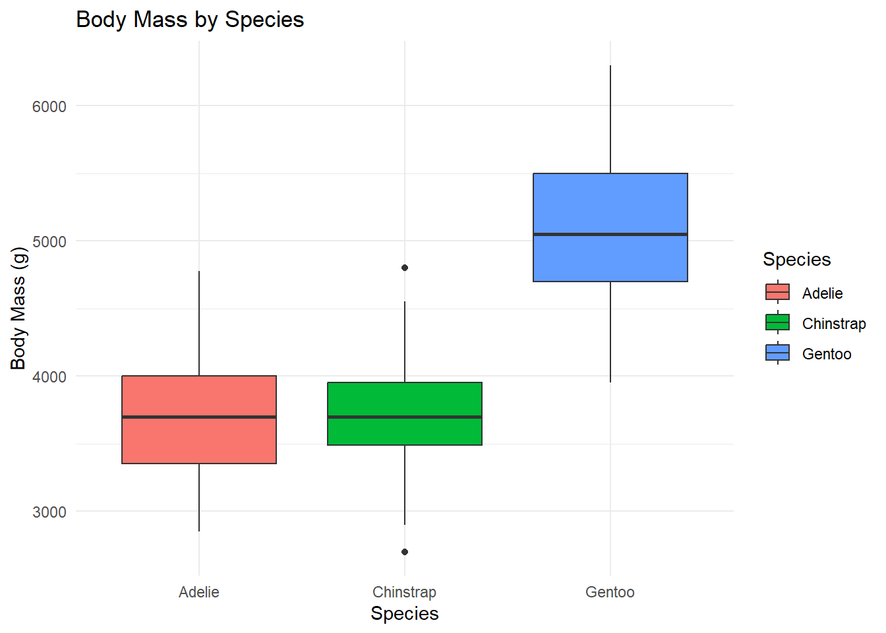
ggsave(filename = file.path(results_path, "mass_by_species_boxplot.png"))Saving 7 x 5 in imageANOVA: Body Mass ~ Species
Now we run an ANOVA to test the statistical significance of the differences.
# Test if species differ in body mass using ANOVA
lm1 <- lm(`Body Mass (g)` ~ Species, data = dat)
anova_species <- anova(lm1)
print(anova_species)Analysis of Variance Table
Response: Body Mass (g)
Df Sum Sq Mean Sq F value Pr(>F)
Species 2 145838050 72919025 339.27 < 2.2e-16 ***
Residuals 336 72215714 214928
---
Signif. codes: 0 '***' 0.001 '**' 0.01 '*' 0.05 '.' 0.1 ' ' 1# Save ANOVA result
saveRDS(anova_species, file = file.path(results_path, "anova_mass_species.rds"))Question 2: Do Species and Island Affect Body Mass?
We extend our analysis to see if Island plays a role in explaining mass variation.
ANOVA: Body Mass ~ Species + Island
# Test both species and island effects on body mass
lm2 <- lm(`Body Mass (g)` ~ Species + Island, data = dat)
anova_species_island <- anova(lm2)
print(anova_species_island)Analysis of Variance Table
Response: Body Mass (g)
Df Sum Sq Mean Sq F value Pr(>F)
Species 2 145838050 72919025 337.3166 <2e-16 ***
Island 2 13655 6827 0.0316 0.9689
Residuals 334 72202060 216174
---
Signif. codes: 0 '***' 0.001 '**' 0.01 '*' 0.05 '.' 0.1 ' ' 1# Save ANOVA result
saveRDS(anova_species_island, file = file.path(results_path, "anova_mass_species_island.rds"))Visualize the Interaction Between Species and Island
Let’s create a grouped boxplot to explore how species and island interact in relation to body mass.
# Visualize interaction of body mass by species across islands
ggplot(dat, aes(x = Species, y = `Body Mass (g)`, fill = Island)) +
geom_boxplot(position = position_dodge()) +
labs(title = "Body Mass by Species and Island", y = "Body Mass (g)") +
theme_minimal()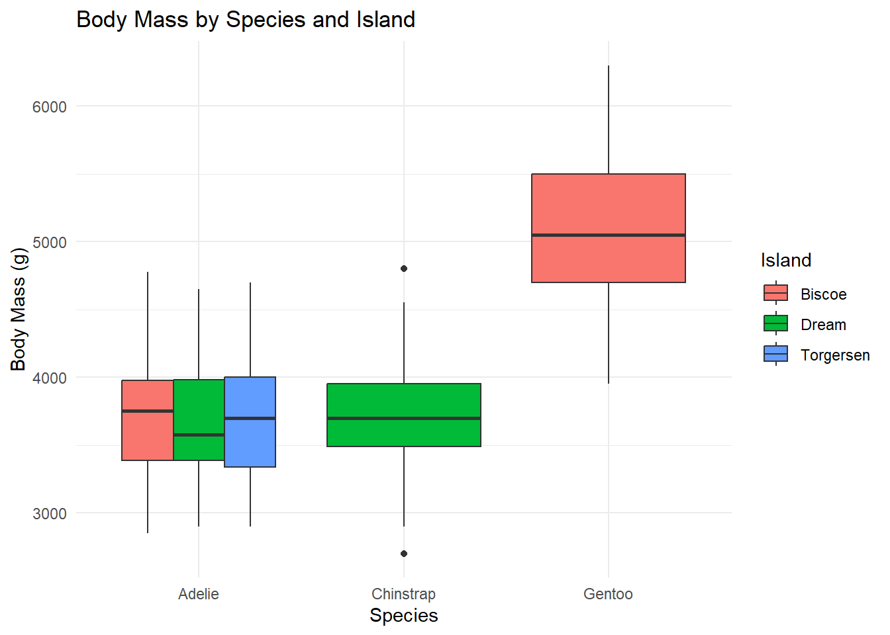
ggsave(filename = file.path(results_path, "mass_species_island_interaction.png"))Saving 7 x 5 in imageQuestion 3: Body Mass Distribution by Species and Island
We use a faceted density plot to visualize the distribution of body mass by species on each island.
# Density plot of body mass by species, faceted by island
ggplot(dat, aes(x = `Body Mass (g)`, fill = Species)) +
geom_density(alpha = 0.5) +
facet_wrap(~ Island) +
labs(title = "Body Mass Distribution by Species across Islands") +
theme_minimal()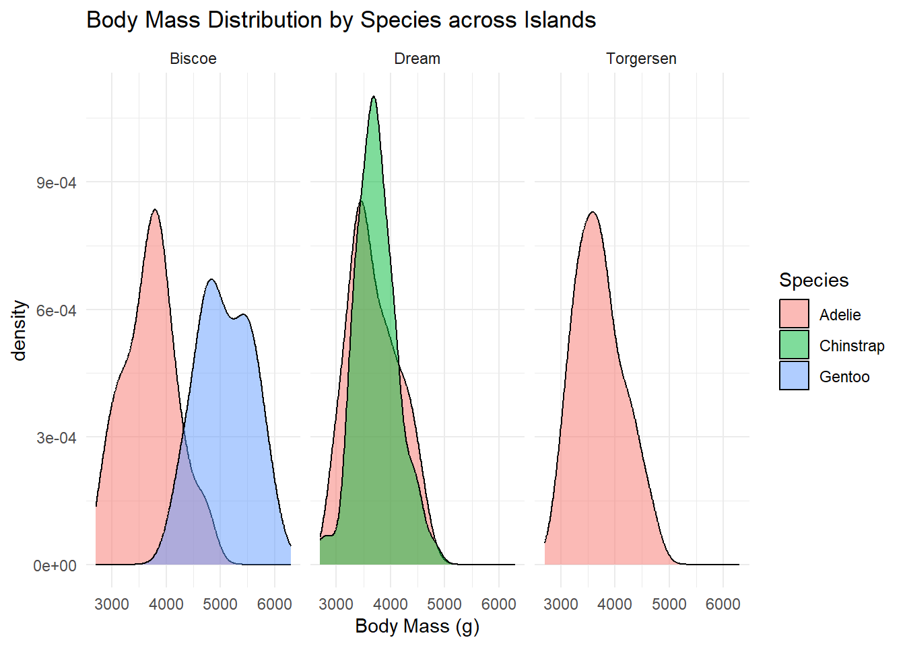
ggsave(filename = file.path(results_path, "mass_density_by_island.png"))Saving 7 x 5 in imageSave Summary Table (Optional)
Finally, we save the summary table we created in case we want to use it in another analysis or report.
# Save filtered dataset or summary stats for future use (optional)
write.csv(sk.table, file = file.path(results_path, "summary_table.csv"), row.names = FALSE)All Done!
Thanks for following along in Project 2. This completes my analysis of penguin body mass variation using statistical modeling and data visualization!